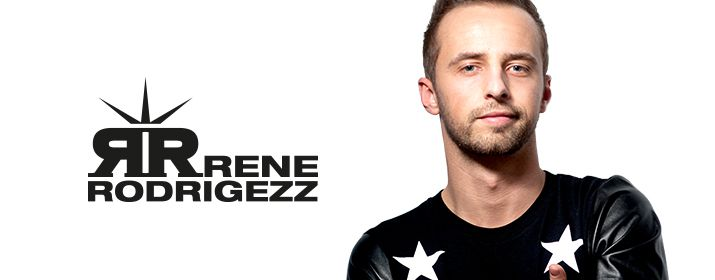

Mainstage: 22:00-23:00!
Die musikalische Geschichte von Rene Seidl alias Rene RodRigezz begann bereits im
Alter von acht Jahren mit einer klassischen Ausbildung bei den Florianer
Sängerknaben.
2010 wurde Rene beim Austrian Dance Award in 3 Kategorien – „Best
Newcomer/Best Remixer/Best Producer“ – nominiert. 2012 folgte die 2-fache
Auszeichnung beim Austrian Dance Award als „Best Artist“ & „Best Remixer“ in der
Kategorie Electronic/Dance
2011 erschien das Album Crank, but Sexy. Im selben Jahr erhielt der Österreicher
den Austrian Dance Award in der Kategorie „Best Remixer“.
Shake 3x(gemeinsam mit DJ Antoine & MC Yankoo) erschien im März 2012. Die
Single erreichte mehrere Millionen Klicks auf YouTube, Top Charts weltweit, sowie
unzählige Compilation-Platzierungen.
Das 2. Album Love, Peace &Rock‘n’Rollerschien Anfang 2013 und erreichte Platz 4
der österreichischen Verkaufscharts.
Anfang 2014 gründete er sein eigenes Label Big Smile Records.
Derzeit arbeitet Rene Rodrigezz an seinem dritten Studioalbum, welches Mitte 2015
erscheinen wird.